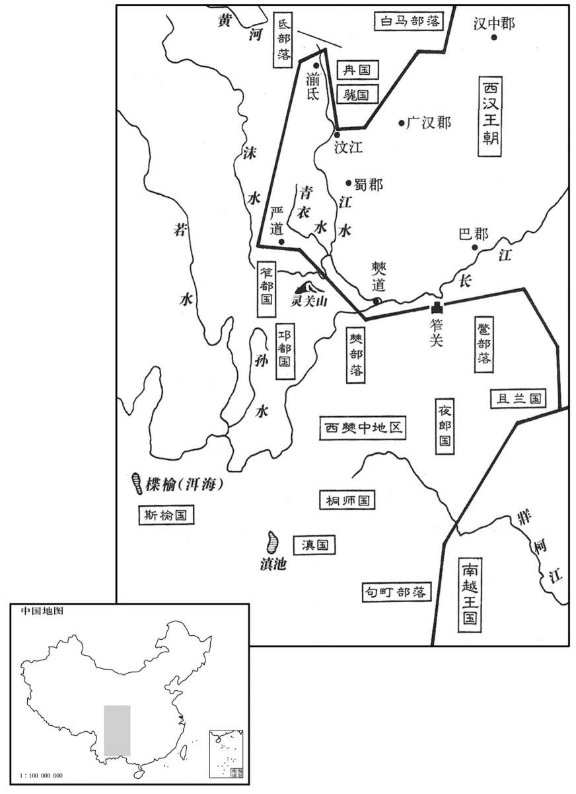
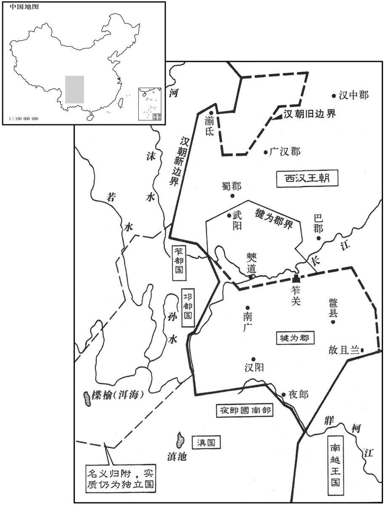

公元前130年资治通鉴：本年记事、原文与白话对照
按原书编年位置阅读；追叙和史论不等于本年发生的事件。白话采用所据译本，缺译不以生成译文补齐。
卷18 · 本年记事
公元前130年 · 汉世宗孝武皇帝元光五年
元光五年〔（辛亥、前一三○）〕
本年事件索引（现代整理）

本年形势与背景参考图

本年形势与背景参考图
冬，十月，河间王来朝，献雅乐，对三雍宫〔应劭曰：辟雍、明堂、灵台也。雍，和也；言天地、君臣、人民皆和也。余谓对三雍宫者，对三雍之制度，非召对于三雍宫。〕及诏策所问三十余事；其对，推道术而言，得事之中，文约指明，〔师古曰：中，竹仲翻。约，少也。指，谓义之所趋，若人以手指物也。〕天子下太乐宫常存肄河间王所献雅声，〔班表：太乐官属大常。肄，以至翻，习也。下，遐嫁翻。〕岁时以备数，然不常御也。春，正月，河间王薨，中尉常丽以闻，〔姓谱：常性，黄帝相常先之后。〕曰：“王身端行治，〔师古曰：端，直也。治，理也。行，下孟翻。〕温仁恭俭，笃敬爱下，明知深察，惠于鳏寡。”大行令奏：“谥法:『聪明睿知曰献』，谥曰献王。”〔知，读曰智。〕
冬季，十月，河间王刘德来京朝见，进献用于郊庙朝会的正乐，回答了有关三雍宫的典章制度及皇帝拟定的三十多个问题。他的回答，都是依据并阐明了儒学思想，抓住了问题的关键，文字简捷，观点明确。武帝下令让掌管宫廷音乐的太乐官经常练习河间王所献的雅乐，作为年节典礼中的项目，但平常很少演奏。春季，正月，河间王刘德去世，中尉常丽向朝廷报告了他的死讯，并说：“河间王立身端正，行为谨饬，温良仁义，恭敬俭朴，敬上爱下，聪明智慧，洞察隐微，恩惠及于鳏夫寡妇。”大行令奏报武帝：“《谥法》说：‘聪明睿智称之为献。’议定河间王刘德的谥号为献王。”
班固赞曰：昔鲁哀公有言：“寡人生于深宫之中，长于妇人之手，未尝知忧，未尝知惧。”〔师古曰：哀公与孔子言也，事见孙卿子。长，知两翻。〕信哉斯言也，虽欲不危亡，不可得已！〔师古曰：巳，语终辞。〕是故古人以宴安为鸩毒，〔师古曰：左氏传：管敬仲曰：“宴安鸩毒，不可怀也。”〕无德而富贵谓之不幸。汉兴，至于孝平，诸侯王以百数，率多骄淫失道。何则。沈溺放恣之中，〔沈，持林翻。〕居势使然也。自凡人犹系于习俗，而况哀公之伦乎！“夫唯大雅，卓尔不群”，河间献王近之矣。〔近，其靳翻。〕
班固赞曰：过去鲁哀公曾说过这样的话：“我在深宫中出生，在妇人抚育下长大，从不知道什么是忧愁，从未体验过什么是恐惧。”这话说得多么真实啊。这样的人做君主，即便他不想使国家陷入危亡的绝境，也不可能啊！所以古人把安享太平看成为毒酒，把没有仁德而身居富贵之位称之为不幸。汉朝建国，直到孝平帝，诸侯王数以百计，大多骄横荒淫丧失道德。为什么这样呢？沉溺在放纵恣肆的环境中，他们所处的地位导致他们如此。即使是常人都要深受习俗的影响，何况鲁哀公之类的人呢！“学识渊博，出类拔萃”，河间献王刘德可说近似这样的人。
初，王恢之讨东越也，〔见上卷建元六年。〕使番阳令唐蒙风晓南越。南越食蒙以蜀枸酱，〔班志，番阳县属豫章郡。番，蒲何翻。风，读曰讽。刘德曰：枸树如桑，其椹长二三寸，味酢；取其实以为酱，美。师古曰：枸者，缘木而生，非树也。子形如桑椹，又不长，一二寸，味尤辛，不酢：刘说非也。裴骃曰：按汉书音义：枸木似谷树，其叶似桑叶，用其叶作酱酢，美，蜀人以为珍味。广志曰：枸，黑色，味辛，下气，消谷。晋灼曰：枸，音矩。索隐从徐广音求羽翻。唐本本草注曰：蒟，蔓生，叶似王瓜而厚大，味辛香，实似桑椹，皮黑，肉白。刘渊林曰：蒟酱，缘木而生，其子如桑椹，熟时正青，长二三寸，以蜜藏而食，辛香，调五藏。李心传曰:蒟酱，广、蜀皆有之，实草类也。蜀中者，缘木而生，如桑椹，熟时正青，长二三寸，以蜜藏而食之。广中者，蔓生，叶似王瓜而厚大，味辛香，实似桑椹，皮黑，肉白，其苗如浮留藤，取叶合槟榔食之。西戎亦时时持来，细而辛烈。唐蒙所见，谓来自牂柯，则广生，殆蜀本也。蒟酱之味，全类荜拨，而荜拨辛烈尤甚。世人唯用荜拨，不用蒟酱，故鲜有知者。〕蒙问所从来，曰：“道西北牂柯江。牂柯江广数里，出番禺城下。”〔南越志曰：番禺之西有江浦焉。师古曰：牂柯，系船杙。华阳国志云：楚遣庄蹻伐夜郎，军至且兰，椓船于岸而步战。既灭夜郎，以且兰有椓船牂柯处，乃改为牂柯。又后汉志注：牂柯，江中名山。或曰，牂柯江东通四会，至番禺入海。水经：牂柯水东至郁林广郁县为郁水，南流入交趾界。刘昫曰：唐邕州治宣化县，汉郁林郡之领方县地也；驩水在县北，本牂柯河，俗呼为郁状江，即骆越水也。盖广郁县，汉亦属郁林郡。水经所谓交趾界者，汉交趾州界也。牂，音臧。柯，音歌。班志，番禺县属南海郡，时为南越王都。广，古旷翻。番，音潘。禺，音愚。〕蒙归至长安，问蜀贾人。贾人曰：“独蜀出枸酱，多持窃出市夜郎。〔华阳国志：夜郎王，竹王三郎之后，武帝开为县，属牂柯郡。史记正义曰：今泸州南大江南岸协州、曲州，本夜郎国。贾，音古。〕夜郎者，临牂柯江，江广百余步，足以行船。南越以财物役属夜郎，西至桐师，〔桐师亦西南夷种，其地在夜郎之西，叶榆之西南。〕然亦不能臣使也。”蒙乃上书说上曰：〔乃上，时掌翻。说，式芮翻。〕“南越王黄屋左纛。地东西万余里，名为外臣，实一州主也。今以长沙、豫章往，水道多，绝难行。窃闻夜郎所有精兵可得十余万，浮船牂柯江，出其不意，此制越一奇也。诚以汉之强，巴、蜀之饶，通夜郎道为置吏，甚易。”〔为，于伪翻；下同。易，以豉翻。〕上许之。
当初，王恢率军讨伐东越的时候，派番阳县令唐蒙去向南越王说明进军意图。南越人让唐蒙吃蜀地所产的枸酱，唐蒙问是从什么地方来的。南越人说：“是从西北方向的柯河运来的。柯江宽几数，从番禺城近旁流过。”唐蒙回到长安，又问蜀地的商人。商人说：“只有蜀地出产枸酱，许多人私自带着它出境去卖给夜郎。夜郎靠近柯江，柯江宽一百多步，行船毫无问题。南越国利用财物引诱和支配夜郎，向西一直影响到桐师人的居住地，但也不能让这一地区成为南越的臣属国，对它俯首听命。”唐蒙就向武帝上书说：“南越王使用只有皇帝才能用的黄屋左纛，盘踞东西长达万余里的地区，名义上是朝廷的外臣，实际上是一州之主。现在如果从长沙国、豫章郡出兵征讨南越，水路大多淤塞断绝，难以通行。我听说夜郎的精兵总计可有十余万人，我军乘船顺柯江而下，出其不意，这是制服南越的一条奇计。只要真的使用汉朝的强威，再加上巴、蜀两地富袷的经济力量，那么，打通夜郎的道路，在那儿设置官吏实施统治，是很容易做到的。”武帝批准了唐蒙的建议。
乃拜蒙为中郎将，将千人，食重万余人，〔师古曰：食粮及衣重也。重，直用翻。〕从巴、蜀筰关入，〔李文子曰：筰关在沈黎郡；又云：在犍为郡界。宋白曰：眉州青神县临青衣江。郡国志：汉武帝使唐蒙开西南夷路始此。眉州，汉犍为郡地。筰，才各翻。〕遂见夜郎侯多同。〔多同，夜郎侯之名也。〕蒙厚赐，喻以威德，约为置吏，使其子为令。〔自此以下，为，如字。〕夜郎旁小邑皆贪汉缯帛，以为汉道险，终不能有也，乃且听蒙约。还报，上以为犍为郡，〔李文子曰：犍为郡治鄨；元光五年，又治南广。水经注曰：鄨水出符县南不狼山，县有犍山。后汉志：鄨水过牂柯郡入延江水。水经注：沅水出且兰，东至镡城为沅水。寰宇记：唐播州、夷州、费州、庄州即秦且兰、夜郎之西北隅，今珍州亦其地。又西，高州有夜郎县，牂州建安县有古夜郎城，西近施、黔，东近辰、沅，皆其境也。犍，居言翻。章怀太子贤曰：犍为故城，在今眉州隆山县西北。〕发巴、蜀卒治道，自僰道指牂柯江，〔班志，僰道属犍为郡。宋白曰：古僰国；县有蛮夷曰道，故为僰道，今戎州治所。康曰：僰国在马湖江，唐蒙凿石开道以通之。治，直之翻。僰，蒲北翻。〕作者数万人，士卒多物故，有逃亡者；用军兴法诛其渠率，〔郑玄曰：县官征聚曰兴，今云军兴是也。率，所类翻。〕巴、蜀民大惊恐。上闻之，使司马相如责唐蒙等，因谕告巴、蜀民以非上意，相如还报。
于是，武帝任命唐蒙为中郎将， 率领士兵一千人和运输粮食衣物的民夫一万多人，经过巴蜀两郡，从关进入夜郎境内，于是见到夜郎侯多同。唐蒙带来厚重的赏赐，告知汉朝的严威圣德，约定由朝廷在当地任命官吏，并让多同的儿子担任县令一级官员。夜郎附近的小城邑都贪图得到汉朝的丝绸，他们以为从汉朝到当地来，道路艰险，汉朝终究不可能占有这片地区，于是就暂且表示服从唐蒙的约定。唐蒙返京奏报，武帝就在这一地区设立了犍为郡，征发巴、蜀两郡的士卒修筑道路，从道指向柯江，修路的人有数万人，许多士卒死亡，有的士卒就逃跑了；唐蒙等人用“军兴法”诛杀逃亡士卒的头目，巴、蜀百姓极度惊恐。武帝得知此事，就派司马相如前去责备唐蒙等人，并公开告知巴蜀一带的百姓，唐蒙等人的作法并不是皇帝的本意；司马相如返京奏报处置情况。
是时，邛、筰之君长〔华阳国志：雅州邛崃山，本名邛筰山，故邛人、筰人界。韦昭曰，筰县在越雟。文颖曰：邛者，今为邛都县；筰者，今为定筰县。史记正义曰：邛都西有邛僰山，在雅州荣经县界，山岩峭峻，曲回九折，乃至上下有疑冰，即王尊叱驭处。康曰：邛都夷，其地陷为污泽，因名邛池，南人呼为邛河。师古曰：邛都，今之邛州本其地。邛，渠容翻。筰，才各翻。〕闻南夷与汉通，得赏赐多，多欲愿为内臣妾，请吏比南夷。天子问相如，相如曰：“邛、筰、冉駹者近蜀，道亦易通；〔师古曰：今开州、夔州等首领多姓冉者，本皆冉种也。后汉书，冉駹，其山有六夷、七羌、九蛮，各有部落。括地志：蜀西徼外羌，茂州、冉州本冉駹国。康曰：其人依山居士，累石为室至十余丈。駹，音厖。易，以豉翻。〕秦时尝通，为郡县，至汉兴而罢。今诚复通，为置郡县，愈于南夷。”〔张揖曰：愈，差也；又云：愈，犹胜也。晋灼曰：南夷，谓牂柯、犍为，西夷，谓越巂、益州也。为置之为，于伪翻。〕天子以为然，乃拜相如为中郎将，建节往使，及副使王然于等乘传，因巴、蜀吏币物以赂西夷；邛、筰、冉駹、斯榆之君〔康曰：本叶榆泽，其君长因以立号，后随畜移于徙。师古曰：徙，音斯，故又号为徙榆。使，疏吏翻。传，张恋翻。〕皆请为内臣。除边关；关益斥，西至沬、若水，〔斥，开广也。张揖曰：沬水出蜀广平徼外，与青衣水合。若水出旄牛徼外，至僰道入江。华阳国志：汉嘉县有沬水。李文子曰：若水南至大作入绳水。师古曰：沬，音妹。〕南至牂柯为徼，通零关道，〔班志，零关属越巂郡。张揖曰：凿灵山为道。寰宇记：灵关山在雅州卢山县北二十里，灵关镇在卢山县北八十二里。零、灵通用。徼，吉吊翻。〕桥孙水〔张揖曰：孙水出台登县，南至会无，入若水。康曰：一名白沙江。李文子曰：孙水，本名长河水。〕以通邛都，为置一都尉、十余县，属蜀。〔为，于伪翻。〕天子大说。〔说，读曰悦。〕
这时，邛人和人的部落酋长听说南夷与汉朝结交，得到很多的赏赐，大多甘愿做汉朝统治下的臣民，请朝廷仿照统治南夷的模式，在他们的居住地任命官吏。武帝询问司马相如的意见，相如说：“邛、、冉都靠近蜀郡，道路也容易开通；秦朝时曾经开通，设置过郡县，到汉朝建国才罢废。现在如果真能再次开通，在那儿设置郡县，将胜过南夷地区。”天子认为他说得对，就任命司马相如为中郎将，持皇帝的符节出使西夷，相如和副使王然于等人乘坐驿车，利用巴蜀两郡的官府财物收买西夷；邛、、冉、斯榆各部族的酋长，都请求做汉朝直接统治下的臣民。废除了原有的边关，新设立的边关向外扩展，西部到达沫水、若水，南至柯江为界，开通了零关道，在孙水上架起了桥，用来接连邛都，在这一地区设立了一个都尉、十多个县，隶属于蜀郡。武帝很高兴。
诏发卒万人治雁门阻险。〔师古曰：阻险，所以为固，用止匈奴之寇。贡父曰：治险阻者，通道令平易，以便伐匈奴。治，直之翻。〕
武帝下诏调集一万士卒修治雁门郡的险要关隘。
秋，七月，大风拔木。
秋季，七月，出现大风，拔起树木。
女巫楚服等教陈皇后祠祭厌胜，挟妇人媚道；事觉，〔厌，一涉翻。贾公彦曰：按汉书：妇人蛊惑媚道，更相祝诅，作木偶人埋之于地。汉法又有官禁敢行媚道者。〕上使御史张汤穷治之。汤深竟党与，相连及诛者三百余人，楚服枭首于市。〔枭，坚尧翻。〕乙巳，赐皇后册，收其玺绶，罢退，居长门宫。〔长门宫，如淳曰：长门在长安城东南。东方朔传：窦太主献长门园，上以为宫。〕窦太主惭惧，稽颡谢上。〔窦太主，陈皇后母也。稽，音启。〕上曰：“皇后所为不轨于大义，不得不废。主当信道以自慰，勿受妄言以生嫌惧。后虽废，供奉如法，长门无异上宫也。”
女巫师楚服等教陈皇后祭神祈祷，使用妇人诅咒的方法， 企图除去与陈皇后争宠的女人；事情败露，武帝指派御史张汤彻底查处。张汤深入地追究有关的人，相互牵联和被处死的有三百多人，楚服在街市被斩首，头颅高悬示众。乙巳（十四日），武帝赐给皇后一份册书，收回了皇后的印玺，废去尊号，贬入长门宫。陈皇后的母亲窦太主羞惭恐惧，向武帝叩头请罪。武帝说：“皇后的行为不符合大义，不得不把她废黜。你应该相信道义而放宽心怀，不要轻信闲言而产生疑虑和恐惧。皇后虽然被废了，仍会按照法度受到优待，居住在长门宫与居住在上宫并无区别。”
初，上尝置酒窦太主家，主见所幸卖珠儿董偃，上赐之衣冠，尊而不名，称为“主人翁”，使之侍饮，由是董君贵宠，天下莫不闻。〔考异曰：汉武故事曰：“陈皇后废处长门宫，窦太主以宿恩犹自亲近。后置酒主家，主见所幸董偃。”按东方朔传：“爰叔为偃画计，令主献长门园，更名曰长门宫，”则偃见上在陈后废前明矣。〕常从游戏北宫，驰逐平乐观，〔平乐观在未央宫北，周回十五里；高祖时，制度草创。至帝增修之。三辅黄图曰：上林苑中有中平乐观。乐，音洛。观，古玩翻。〕鸡、鞠之会，〔斗鸡及蹴踘也。鞠，球也，以皮为之。鞠，音居六翻。〕角狗、马之足，〔师古曰：角，犹校也。〕上大欢乐之。上为窦太主置酒宣室，〔苏林曰：宣室，未央前殿正室也。如淳曰：宣室，布政教之室也。乐，音洛。为，于伪翻。〕使谒者引内董君。是时，中郎东方朔陛戟殿下，〔师古曰：持戟立列陛侧也。〕辟戟而前曰：〔辟，频亦翻。〕“董偃有轨罪三，安得入乎！”上曰：“何谓也？”朔曰：“偃以人臣私侍公主，其罪一也。败男女之化，而乱婚姻之礼，伤王制，其罪二也。〔败，补迈翻。〕陛下富于春秋，方积思于六经；偃不遵经劝学，反以靡丽为右，〔师古曰：右，尊之也。思，相吏翻。〕奢侈为务，尽狗马之乐，极耳目之欲，是乃国家之大贼，人主之大蜮，〔师古曰：蜮，魅也，音或。说者以为短狐，非也；短狐，射工耳，于此不当其义；今俗犹云魅蜮也。贡父曰：刘向说春秋，蜮，南方淫气所生，以应哀姜。然则朔正用指偃耳，何必迁就魅蜮也。余按洪范五行传曰：蜮如鳖，三足，生于南越。南越妇人多淫，故其地多蜮，淫女惑乱之气所生也，陆玑草木疏曰：“一名射影，江、淮水皆有之。人在岸上，影见水中，投水影则杀之，故曰射影。南人将入水，先以瓦石投水中，令水浊，然后入。或曰，含沙射人皮肌，其疮如疥。陆佃埤雅曰：蜮，一名射工，有长角横在口前如弩，檐临其角，端曲如上弩，以气为矢，因水势以射人，故俗呼为水弩。〕其罪三也。”上默然不应，良久曰：“吾业已设，饮后而自改。”朔曰：〔【章：乙十一行本“曰”下有“不可”二字；孔本同；退斋校同。】〕“夫宣室者，先帝之正处也，非法度之政不得入焉。故淫乱之渐，其变为篡。是以竖貂为淫而易牙作患，庆父死而鲁国全。”〔竖貂、易牙，皆齐桓公之臣也。管仲有疾，桓公问之曰：“将何以教寡人？”仲曰：“愿君之远竖貂、易牙。”公曰：“易牙烹其子以快寡人，尚可疑邪？”对曰：“人之情非不爱其子，其子之忍，又将何有于君！”公曰：“竖貂自宫以近寡人，尚可疑邪？”对曰：“人之情非不爱其身，其身之忍，又将何有于君！”公曰：“诺。”管仲死，尽逐之；而公食不甘，宫不治。居三年，公曰：“仲父不亦过乎！”于是复皆召而反之。明年，公病。竖貂、易牙相与作乱，塞门筑墙不通人。有一妇人逾垣至公所，公曰：“我欲食。”妇人曰：“吾无所得。”又曰：“我欲饮。”妇人曰：“吾无所得。”公曰：“何故？”曰：“竖貂、易牙作乱，故无所得。”公慨然叹曰：“若死者有知，吾何面目见仲父乎！”蒙衣袂而绝乎寿宫；虫流出于户，盖以杨门之扉，三月不葬。庆父，鲁桓公庶子，庄公之兄，通于哀姜。庄公薨，庆父弑其子般及闵公，欲为乱而不克，奔莒。莒人归之，缢于密，鲁乃定。父，音甫。〕上曰：“善！”有诏止，更置酒北宫，引董君从东司马门入；〔未央宫有东阙、北阙，东阙曰苍龙。东司马门，苍龙阙内之司马门也。更，工衡翻。〕赐朔黄金三十斤。董君之宠由是日衰。是后，公主、贵人多逾礼制矣。
当初，武帝曾经在窦太主家中摆设酒席，窦太主引见了她宠幸的珠宝商人董偃，武帝赏赐给董偃衣服和冠帽，为了表示尊重，不称他的名字而称他为“主人翁”，让他陪侍饮酒；从此董偃尊贵受宠，天下人没有不知道的。董偃经常陪同武帝在北宫游戏，在平乐观骑马追逐、参与斗鸡、踢球，赛狗、赛马，武帝十分欢喜。武帝在宣室中摆酒款待窦太主，派谒者引导董偃入内。当时，中郎东方朔持戟立燥马追逐、参与斗鸡、踢球，赛狗、赛马，武帝十分欢喜。武帝在宣室中摆酒款待窦太主，派谒者引导董偃入内。当时，中郎东方朔持戟立燥马追逐、参与斗鸡、踢球，赛狗、赛马，武帝十分欢喜。武帝在宣室中摆酒款待窦太主，派谒者引导董偃入内。当时，中郎东方朔持戟立在殿下，他放下戟走近武帝说：“董偃犯有三项死罪，怎能让他进来呢！”武帝说：“你说的是什么呢？”东方朔说：“董偃以臣子的身份私通公主，这是他的第一条罪状。败坏男女风化灺一橐隼穹ǎ茘坏圣王制度，这是他的第二条罪状。陛下年轻，正在努力学习《六经》等儒学典籍，董偃不遵循经书教诲劝勉学习，反而崇尚豪华追求奢侈，尽情地享受斗狗赛马的欢乐，极力满足感官欲望，他是国家的大贼，君主的大害，这是他的第三条罪状。”武帝沉默不答，过了很久才说：“我今天已准备好宴席了，以后再自己改正吧。”东方朔说：“宣室，本来是先帝处理政务的地方，不是讨论有关法度的政务的人都不得进入。所以淫乱的苗头发展，就会变成篡夺君位。正是由于这个道理，当年齐桓公因信用竖貂和易牙受害，而庆父死后，鲁国就得以保全。”武帝说：“你说得好！”下诏让董偃停下来待命，重新在北宫设置酒宴，领董偃从东司马门入宫，赏赐给东方朔三十斤黄金。董偃所受的宠爱，自此以后日益衰减。此后，公主、贵人大多不按礼制行事了。
上以张汤为太中大夫，与赵禹共定诸律令，务在深文。拘守职之吏，作见知法，吏传相监司。用法益刻自此始。〔苏林曰：拘刻于守职之吏。师古曰：见知人犯法而不举告，谓之故纵。晋志曰：见知而不举劾，各与同罪；失不举劾，以赎论；其不见、不知，不坐也。传，张恋翻。监，古衔翻。〕
武帝任命张汤为太中大夫，张汤与赵禹共同制定了各项法律条令，务求繁密严苛。严格控制在职官吏，制定了官员知人犯罪而不举报就要判刑的“见知法”，使官吏互相监视、互相侦察。从此开始，用法更加严厉刻苛了。
八月，螟。〔食心曰螟。〕
八月，庄稼发生螟虫之害。
是岁，征吏民有明当世之务、习先圣之术者，县次续食，令与计偕。〔师古曰：计者，上计簿使也；郡国每岁遣诣京师上之。偕者，俱也；令所征之人与上计者俱来，而县次给其食。后世讹误，因乘此语，遂谓上计为计偕。阚骃不详，妄为解说，云秦、汉谓诸侯朝使曰计偕。偕，次也。晋代有计偕簿，又改“偕”为“阶”，失之弥远，致误后学。〕
这一年，武帝征召官吏百姓中明晓当世政务、熟知古代圣王治国之术的人到朝廷任职，命令应征者与各地进京的“上计吏”同行，由沿途各县供应饭食。
菑川人公孙弘对策曰：“臣闻上古尧、舜之时，不贵爵赏而民劝善，不重刑罚而民不犯，躬率以正而遇民信也；末世贵爵厚赏而民不劝，深刑重罚而奸不止，其上不正，遇民不信也。夫厚赏重刑，未足以劝善而禁非，必信而已矣。是故因能任官，则分职治；去无用之言，则事情得；不作无用之器，则赋敛省；〔治，直吏翻。去，羌吕翻。敛，力赡翻。〕不夺民时，不妨民力，则百姓富；有德者进，无德者退，则朝廷尊；有功者上，无功者下，则群臣逡；〔李奇曰：言有次第也。师古曰：逡，七旬翻。〕罚当罪，则奸邪止，赏当贤，则臣下劝。凡此八者，治之本也。故民者，业之则不争，理得则不怨，有礼则不暴，爱之则亲上，〔师古曰：各得其业，则无争心；各申其理，则无所怨；使之由礼，则无暴慢；子而爱之，则知亲上也。〕此有天下之急者也。礼义者，民之所服也；而赏罚顺之，则民不犯禁矣。
川人公孙弘在考试时答道：“我听说上古尧舜那个时期， 没有尊贵的官爵和丰厚的奖赏，但百姓却相互勉励行善；不重刑罚，但百姓却不犯法，这是因为君主为臣民做出了正直的表率，而且对待百姓很讲信用；到了末代，有尊贵的官爵和丰厚的赏赐，但百姓却得不到劝勉，设立了严酷的刑罚却不能禁止违法犯罪，当时的君主本身不正，对待百姓又不讲信用。用丰厚的奖赏和严酷的刑罚，还不足以鼓励行善、禁止作恶，只有靠讲信用，才能达到这一目的。所以，根据人的才能而委任的官职，就能各司其职，做好工作；抛弃无用的虚言，就能了解事情的真相；不制作无用的器物，就可以减少对百姓的赋税；不在农忙季节征发役夫，不妨害民力，百姓就会富裕；有德的人受到重用，无德的人被罢免，朝廷就尊贵威严；有功的人升职，无功的人降级，群臣就会明白退让的道理；判处刑罚与罪过相应，就能制止犯罪；给予奖赏与贤能相符，就能劝勉臣子。这八项，是治理国家的根本。天下百姓，让他们各自从事生产就不会发生争斗，事情得到合理的解决就不会怨恨，让他们接受教育知道礼义就不会使用暴力，君主爱护他们，他们就会亲近君主，此是统治天下的当务之急。礼义，是百姓甘愿服从的；再用奖赏和刑罚来推行礼义，百姓就不会违犯禁令了。
臣闻之：气同则从，声比则应。〔比，频寐翻，音毗，和也。〕今人主和德于上，百姓和合于下，故心和则气和，气和则形和，形和则声和，声和则天地之和应矣。故阴阳和，风雨时，甘露降，五谷登，六畜蕃，〔畜，许又翻。蕃，扶元翻。〕嘉禾兴，朱草生，山不童，泽不涸，此和之至也。”
“我听说：气相同就能互相影响带动，声相同就能互相呼应。现在， 君主在上面使自己的言行符合德义，百姓在下面与君主相谐调，所以心和就能气和，气和就能形和，形和就能声和，声和就会出现天地安和了。所以阴阳调和，风雨适时，甘露降下，五谷丰登，六畜兴旺，茁壮稻谷生机勃勃，红色瑞草萌生成长，山岭不光秃，湖泊不干涸，这是天地安和的最佳状态。”
时对者百余人，太常奏弘第居下。策奏，天子擢弘对为第一，拜为博士，待诏金马门。〔如淳曰：武帝时，相马者东方京作铜马法献之，立马于鲁班门外，更名鲁班门为金马门。三辅黄图曰：金马门，宦者署，武帝得大宛马，以铜铸作，立于署门，因以为名。〕
当时参加对策考试的有一百多人，太常奏报考试成绩， 把公孙弘列为下等。对策上呈武帝，武帝把公孙弘的对策成绩提升为第一名，任命他为博士，在金马门伺应召对。
齐人辕固，年九十余，亦以贤良征。公孙弘仄目而事固，固曰：“公孙子，务正学以言，无曲学以阿世！”诸儒多疾毁固者，固遂以老罢归。
齐人辕固，已经九十多岁了，也被选为贤良，征召入京。公孙弘斜着眼睛，不正视辕固，辕固说：“公孙先生，一定要依据儒学论事，可不要歪曲儒学来迎合当世！”儒生们有许多人嫉妒诽谤辕固，辕固就以年老为名免官回原籍了。
是时，巴、蜀四郡〔四郡，蜀郡、广汉郡、犍为郡、巴郡也。〕凿山通西南夷，千余里戍转相饷。数岁，道不通，士罢饿、离暑湿死者甚众；〔罢，读曰疲。〕西南夷又数反，〔数，所角翻。〕发兵兴搫，费以巨万计而无功。上患之，诏使公孙弘视焉。还奏事，盛毁西南夷无所用，上不听。弘每朝会，〔【章：乙十一行本“会”下有“议”字；孔本同；退斋校同。朝，直遥翻。〕开陈其端，使人主自择，不肯面折廷争。于是上察其行慎厚，辩论有余，习文法吏事，缘饰以儒术，〔师古曰：譬之于衣，加纯缘也。折，之舌翻。争，读曰诤。行，下孟翻。〕大说之，〔说，读曰悦。〕一岁中迁至左内史。〔考异曰：汉书武纪云：“元光元年五月，诏策贤良，于是董仲舒、公孙弘等出焉。”按弘传：“元光五年，复征贤良文学，菑川国推上弘。”其策文颇与武纪元年策文相类。又云：“一岁中至左内史。”百官表：“元光五年，弘为左内史。”然则弘之再举贤良，不在元光元年明矣。荀纪着于此年“征吏民明当世之务”下。葛洪西京杂记亦云：“弘以元光五年为国士所推上为贤良，”若此续食之诏在八月，则弘不容于今年巳为左内史。盖此诏在今年，不知何月，故班氏系之于年末耳。其策文相类，盖出偶然；或者此策乃弘先举贤良时所对，班氏误以为此年之策。疑未能明，今从汉纪。〕
这时，巴、蜀等四郡开凿山险修筑连接西南夷的通道，千余里外转运粮饷。过了几年，道路没有开通，修路的士兵疲惫饥饿、遭受炎热潮湿折磨而死的人很多，西南夷又多次反叛，调集军队去进攻，军费开支以万万计，却不见功效。武帝很担忧，下诏派公孙弘前去该地视察情况。公孙弘返京奏报情况，极力批评开通西南夷没有什么作用，武帝不听从他的意见。公孙弘每当在朝廷讨论问题时，总是列举陈述事情的端绪，让武帝自己抉择，不肯在朝廷之上与武帝当面争辩。因此武帝看出他为人谨慎厚道，善于辩论，熟悉文书法令和具体的官府公务，又会用儒术加以文饰，对他非常欣赏，一年之中升官到左内史。
弘奏事，有不可，不廷辨。常与汲黯请间，〔师古曰：求空隙之暇。〕黯先发之，弘推其后，天子常说，〔说，读曰悦。〕所言皆听，以此日益亲贵。弘尝与公卿约议，至上前，皆倍其约以顺上旨。〔倍，蒲妹翻。〕汲黯廷诘弘曰：“齐人多诈而无情实；始与臣等建此议，今皆倍之，不忠！”上问弘。弘谢曰：“夫知臣者，以臣为忠；不知臣者，以臣为不忠。”上然弘言。左右幸臣每毁弘，上益厚遇之。
公孙弘上奏，遇到武帝不同意时，他不在朝廷上争辩。 常与汲黯请求单独召见，先由汲黯提出问题，后由公孙弘进一步补充，武帝经常听得很高兴，所提的建议都加以采纳，因此，公孙弘越来越得到武帝的亲近和重用。公孙弘曾经和公卿商定某一问题的处置意见，到了武帝面前，他却完全背弃了原来的约定，而迎合武帝的心意。汲黯当即在朝廷上批评公孙弘说：“齐人大多欺诈而不忠诚老实；他开始和我们一道商定此条建议，现在却全都背弃了，这是不忠！”武帝责问公孙弘，公孙弘谢罪说：“了解我的人，认为我忠；不了解我的人，认为我不忠。”武帝认为他说得对。武帝身边的亲信经常诋毁公孙弘，武帝对他却更加优待。